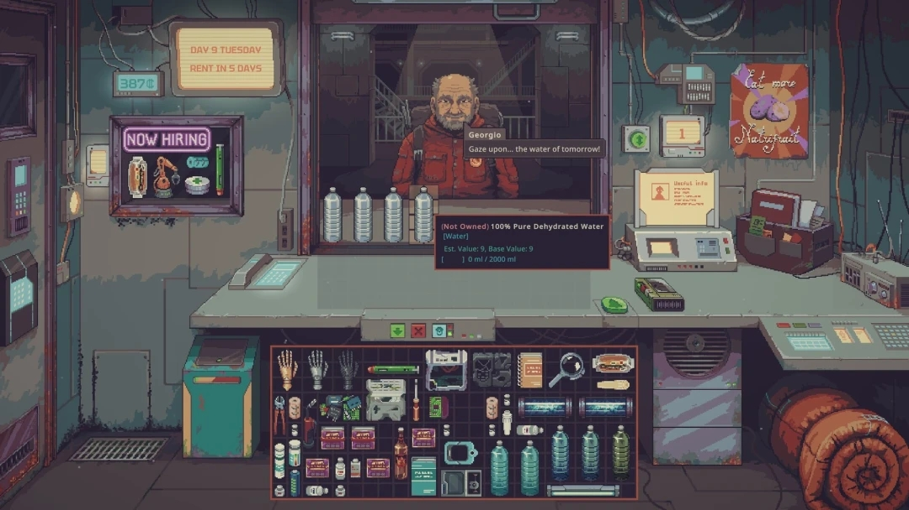

<!doctype html><html lang="zh-CN"><meta charset="utf-8"><meta name="viewport" content="width=device-width,initial-scale=1"><title>经营场景 · 布局确认</title>
<style>[hidden]{display:none!important}*{box-sizing:border-box}body{margin:0;background:#141719;color:#e3e6e7;font:14px system-ui,"PingFang SC",sans-serif}header{max-width:1280px;margin:24px auto 16px;padding:0 24px;display:flex;align-items:center;gap:24px}h1{font-size:18px;margin:0;font-weight:500}header span{color:#90999e;font-size:13px}nav{max-width:1280px;margin:0 auto 14px;padding:0 24px;display:flex;align-items:center;gap:8px;flex-wrap:wrap}button{background:#252b2f;color:#cdd3d6;border:1px solid #454e54;padding:8px 16px;border-radius:4px;cursor:pointer}button[aria-pressed=true]{background:#d4dde1;color:#162026;border-color:#d4dde1}label{margin-left:16px;color:#aeb9bf;display:flex;gap:8px;align-items:center}main{max-width:1280px;margin:auto;padding:0 24px}.stage{position:relative;aspect-ratio:1080/608;background:#272d31;border:1px solid #515a60;overflow:hidden}.stage>img,.stage>svg{position:absolute;width:100%;height:100%;inset:0}svg{transition:opacity .15s}footer{max-width:1280px;margin:16px auto;padding:0 24px;color:#a4afb5;line-height:1.8}footer p{margin:4px 0}.marks{display:none}.annotated .marks{display:block}.marks text{font:12px system-ui;fill:#c6f2fb;paint-order:stroke;stroke:#17272d;stroke-width:4}.grid{opacity:.22}.no-grid .grid{display:none}#detail{color:#d4e1e6;min-height:24px}input{accent-color:#a4d4df}a{color:#a4d4df}svg .hit{fill:transparent;stroke:transparent;cursor:help}svg .hit:hover{stroke:#afdbe7;stroke-width:2;fill:#afdbe714}@media(max-width:700px){header{display:block}header span{display:block;margin-top:8px}label{margin-left:0}}</style>
<aside style="margin:16px 24px;padding:12px;border:1px solid #ff6b35">归档：早期布局与概念，不作为当前生成依据。当前实现见 <a href="../整体视觉与UI规范.md">整体视觉与 UI 规范</a>。</aside>
<header><h1>经营场景 · 布局确认</h1><span>1080 × 608，与参考图同一画幅。仅确认结构，不代表最终美术。</span></header>
<nav><button data-mode="layout" aria-pressed="true">布局灰模</button><button data-mode="reference" aria-pressed="false">原始参考图</button><button data-mode="overlay" aria-pressed="false">叠图对照</button><label id="blend" hidden>灰模透明度 <input id="opacity" type="range" min="0" max="100" value="50"></label><label><input id="grid" type="checkbox" checked>显示占格</label><label><input id="marks" type="checkbox">对照注释</label></nav>
<main><div class="stage" id="stage"><svg id="layout" viewBox="0 0 1080 608" aria-label="按参考图空间比例绘制的经营场景灰模">
<defs><pattern id="wall" width="42" height="608" patternUnits="userSpaceOnUse"><rect width="42" height="608" fill="#42484b"/><path d="M0 0V608" stroke="#50575b" stroke-width="1"/></pattern><pattern id="small" width="18" height="18" patternUnits="userSpaceOnUse"><path d="M18 0H0V18" fill="none" stroke="#b5c7ce" stroke-width=".8"/></pattern><pattern id="customerGrid" width="13.5" height="13.5" patternUnits="userSpaceOnUse"><path d="M13.5 0H0V13.5" fill="none" stroke="#b5c7ce" stroke-width=".8"/></pattern><pattern id="flat" width="18" height="16" patternUnits="userSpaceOnUse"><path d="M18 0H0V16" fill="none" stroke="#b5c7ce" stroke-width=".8"/></pattern><clipPath id="counterClip"><path d="M292 303H724L1068 320L1080 378H226Z"/></clipPath><clipPath id="windowClip"><rect x="369" y="34" width="347" height="256"/></clipPath></defs>
<!-- Fixed structural shell: reference coordinates, no decorative bitmap overlays. -->
<rect width="1080" height="608" fill="url(#wall)"/><path d="M0 553L217 504H899L1080 565V608H0Z" fill="#313638"/>
<!-- Left doorway occupies the same thin left edge as the reference. -->
<path d="M0 5L91 24V557L0 607Z" fill="#292f33" stroke="#687176" stroke-width="5"/><path d="M8 61L66 72V503L8 542Z" fill="#3a4145" stroke="#747d82" stroke-width="2"/><path d="M14 201L34 204V262L14 266Z" fill="#76868b"/><path d="M75 331V384" stroke="#adbac0" stroke-width="5"/>
<!-- Wall-mounted status and display, no top navigation inside the game frame. -->
<rect x="207" y="29" width="129" height="85" rx="5" fill="#777d7d" stroke="#272e31" stroke-width="7"/><path d="M225 55H318M225 78H307M225 95H300" stroke="#b2b9b8" stroke-width="4"/><rect x="134" y="87" width="62" height="27" fill="#8c989a" stroke="#252e32" stroke-width="5"/>
<rect x="136" y="140" width="150" height="116" fill="#262e33" stroke="#757e83" stroke-width="9"/><path d="M151 176H271M151 235H271" stroke="#69757b" stroke-width="3"/>
<!-- Single window recess. Bottom shelf is one continuous structural sill. -->
<rect x="354" y="16" width="378" height="289" fill="#282e32" stroke="#727c80" stroke-width="8"/>
<g clip-path="url(#windowClip)"><rect x="369" y="34" width="347" height="256" fill="#454f54"/><path d="M374 204L449 115L493 165L570 91L651 163L717 135V273H369Z" fill="#535d61"/><path d="M389 42V241M674 42V241" stroke="#626c70" stroke-width="2"/>
<!-- Neutral customer volume, not fixed character art. -->
<ellipse cx="548" cy="119" rx="29" ry="34" fill="#a2a7a8"/><path d="M518 143Q490 148 475 185L470 237H625L614 178Q599 150 576 143L548 164Z" fill="#7b8589" stroke="#b0b7b9" stroke-width="2"/><path d="M503 180L493 231H523M589 180L604 231H574" fill="none" stroke="#bdc4c5" stroke-width="4"/>
<!-- Customer's goods rest on the existing outside sill; the final approved tray is 24 × 4. -->
<path d="M383 235H704L716 286H369Z" fill="#626969"/><path d="M369 286H716V297H369Z" fill="#3b4346"/><rect class="grid" x="378" y="236" width="324" height="54" fill="url(#customerGrid)"/>
<g fill="#b6c3c6" stroke="#48565c" stroke-width="2"><rect x="386" y="240" width="17" height="47" rx="4"/><rect x="422" y="240" width="17" height="47" rx="4"/><rect x="458" y="240" width="17" height="47" rx="4"/><rect x="494" y="240" width="17" height="47" rx="4"/></g></g>
<!-- Main counter: a single top plane matched to the screenshot. -->
<path d="M292 303H724L1068 320L1080 378H226Z" fill="#808b8d" stroke="#a1aaab" stroke-width="2"/><g clip-path="url(#counterClip)"><rect class="grid" x="290" y="307" width="774" height="64" fill="url(#flat)"/></g><path d="M226 378H1080V391H226Z" fill="#525e63" stroke="#a1aaab"/>
<!-- Small in-world counter controls, preserving screenshot placement. -->
<path d="M279 314H349L334 344H267Z" fill="#495a61" stroke="#abbac0"/><rect x="430" y="381" width="157" height="27" fill="#737f83" stroke="#a2aeb2"/><g fill="#bdc9cb"><rect x="464" y="386" width="17" height="17"/><rect x="489" y="386" width="17" height="17"/><rect x="514" y="386" width="17" height="17"/></g>
<!-- Inventory directly beneath the middle of the counter, not full-width HUD. -->
<rect x="318" y="410" width="442" height="188" fill="#20282e" stroke="#879397" stroke-width="3"/><rect class="grid" x="322" y="414" width="432" height="180" fill="url(#small)"/>
<g id="stock"></g>
<!-- Left under-counter container. -->
<path d="M219 420H302V546H219Z" fill="#515c61" stroke="#869397" stroke-width="2"/><path d="M229 426H291L282 446H222Z" fill="#313f46"/><path d="M239 454H283" stroke="#a4b0b2" stroke-width="5"/>
<!-- Right wall equipment and side surface, then sleep interaction at lower right. -->
<rect x="784" y="141" width="52" height="43" fill="#8a9292" stroke="#384448" stroke-width="4"/><path d="M756 203H847V273H756Z" fill="#969b97" stroke="#505a5b" stroke-width="4"/><path d="M745 274H859L876 324H738Z" fill="#727f84" stroke="#a2afb2"/>
<path d="M904 381H1080V438H928Z" fill="#737f83" stroke="#a1abad" stroke-width="2"/>
<path d="M914 475Q934 449 963 463L1080 530V608H998L914 543Z" fill="#535e65" stroke="#919ca1" stroke-width="3"/><path d="M920 480Q942 464 966 479L989 496L963 520L922 503Z" fill="#b0b6b5"/><path d="M961 510L1080 555V608H1001L944 543Z" fill="#78858b" stroke="#a3afb3" stroke-width="2"/>
<!-- Hover-only hit targets explain review dimensions outside the scene. -->
<path class="hit" data-note="左侧门口：沿参考图左边缘，约占画面宽度 9%；不向中央挤占橱窗。" d="M0 5L91 24V557L0 607Z"/>
<rect class="hit" data-note="橱窗：x 33%–68%，上方到画面约 50% 高；顾客保持在窗口中央。外景和人物以后分别替换。" x="354" y="16" width="378" height="289"/>
<rect class="hit" data-note="顾客货物：在橱窗底部现有桌板上，最终确认 24 × 4 格；灰模中的面就是窗台结构，不是额外背景卡片。" x="369" y="235" width="347" height="62"/>
<path class="hit" data-note="柜台：约 y 50%–64%，保持参考图的浅梯形台面，示意 43 × 4 小格；不加第二层台面图片。" d="M292 303H724L1068 320L1080 391H226V378Z"/>
<rect class="hit" data-note="主库存：紧贴柜台下方，覆盖中央橱柜范围，顶部增加两行。示意 30×12 小格；设备作为物品放入其中。" x="318" y="410" width="442" height="188"/>
<rect class="hit" data-note="右下睡觉空间：占用参考图右下角卷铺盖的位置；保留右侧台面与墙面空间。" x="906" y="459" width="174" height="149"/>
<g class="marks"><text x="20" y="295">门口</text><text x="372" y="54">橱窗 · 独立外景与顾客</text><text x="552" y="277">窗台上的顾客货物</text><text x="594" y="349">同一块柜台台面</text><text x="330" y="588">30 × 12 库存小格</text><text x="935" y="571">睡觉空间</text></g>
</svg></div></main>
<footer><p id="detail">可切换原图或叠图对照；将鼠标移到灰模区域，查看对应位置。</p><p>确认重点：橱窗与顾客比例、窗台与柜台的前后关系、库存位置，以及左门右下床铺的空间。确认后再按此构图生成分层背景。</p></footer>
<script>
const svg=document.querySelector('#layout'),stage=document.querySelector('#stage'),range=document.querySelector('#opacity');let mode='layout';function refresh(){svg.style.opacity=mode==='reference'?0:mode==='overlay'?range.value/100:1;svg.style.pointerEvents=mode==='reference'?'none':'auto';document.querySelector('#blend').hidden=mode!=='overlay';document.querySelectorAll('[data-mode]').forEach(b=>b.setAttribute('aria-pressed',b.dataset.mode===mode))}document.querySelectorAll('[data-mode]').forEach(b=>b.onclick=()=>{mode=b.dataset.mode;refresh()});range.oninput=refresh;document.querySelector('#grid').onchange=e=>stage.classList.toggle('no-grid',!e.target.checked);document.querySelector('#marks').onchange=e=>stage.classList.toggle('annotated',e.target.checked);document.querySelectorAll('.hit').forEach(n=>{n.onmouseenter=()=>document.querySelector('#detail').textContent=n.dataset.note;n.onmouseleave=()=>document.querySelector('#detail').textContent='可切换原图或叠图对照；将鼠标移到灰模区域，查看对应位置。'});
// Representative footprints only; the approved game counts are customer 24×4, counter 43×4 and stock 30×12. No category or sort UI.
const slots=[[0,0,1,3],[2,0,1,3],[4,0,4,1],[9,0,3,3],[13,0,3,3],[17,0,2,2],[20,0,3,1],[0,4,1,3],[2,4,1,3],[4,4,2,2],[7,4,2,2],[10,4,1,3],[12,4,2,2],[15,4,1,2],[17,4,4,1],[22,3,1,3],[1,8,1,2],[4,7,2,1],[7,7,2,1],[10,8,2,2],[13,7,2,3],[17,6,1,4],[19,6,1,4],[21,6,1,4],[23,6,1,4]];document.querySelector('#stock').innerHTML=slots.map(([x,y,w,h],i)=>`<rect x="${324+x*18}" y="${416+y*18}" width="${w*18-4}" height="${h*18-4}" rx="2" fill="${['#849397','#677d86','#a0a8a3'][i%3]}" stroke="#b0bcc0" stroke-width=".7"/>`).join('');refresh();
</script></html>
